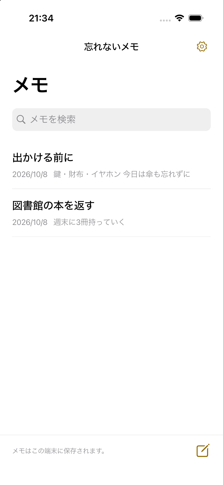

書く。選ぶ。目に入る。
01
メモを開いて書くと、自動で保存されます。
02
メモの「ホームに追加」から、端末の案内に従ってウィジェットを追加します。
03
メモをタップすると、そのまま編集できます。
書くことと、読むことをシンプルに。
文字の大きさは3段階
標準・大きめ・特大。長い文章はタップして全文を読めます。
残したいメモを手元に
登録不要。端末内に保存し、削除したメモは30日間戻せます。
10の言語に対応
日本語・英語・韓国語・簡体字・繁体字・スペイン語・フランス語・ドイツ語・イタリア語・ブラジルポルトガル語。
広告
無料で、メモ一覧の下部にバナー広告を1枚表示する予定です。編集画面とウィジェットは広告なし。広告が読み込めなくてもメモは使えます。